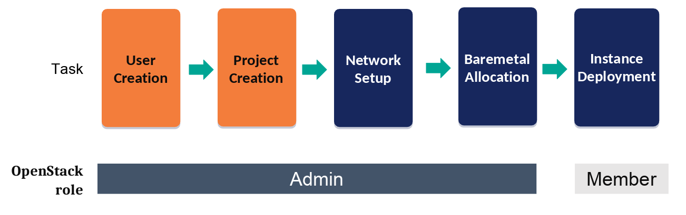
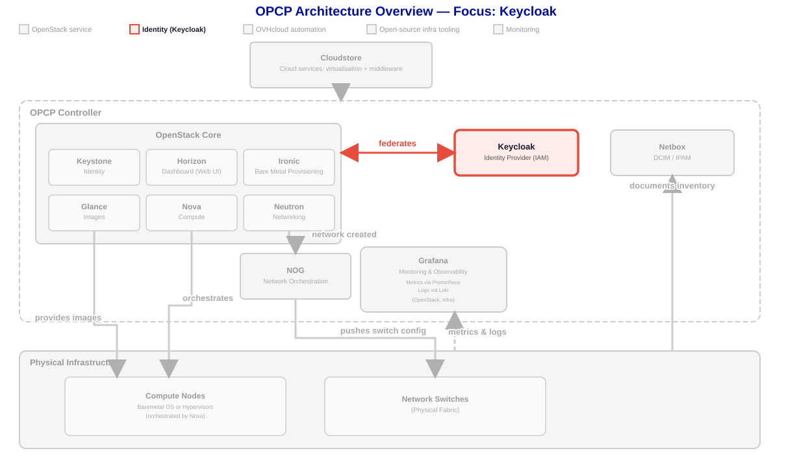
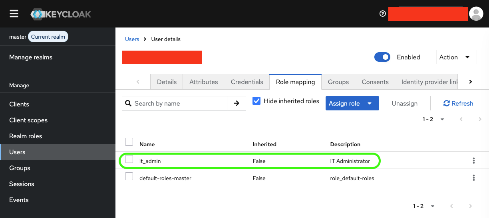

Gestion des utilisateurs

Avant de vous authentifier auprès d'OpenStack, vous avez besoin d'un compte utilisateur. OPCP Core s'appuie sur Keycloak comme fournisseur d'identité, qui fédère avec Keystone pour émettre des tokens OpenStack à portée de projet. Cette leçon vous guide dans la configuration complète : passage en revue des rôles intégrés, configuration du client OIDC qui relie Keycloak à Keystone, création d'un projet OpenStack, création d'un utilisateur et attribution du rôle et des attributs de projet appropriés, puis vérification de l'authentification de cet utilisateur. À la fin de cette leçon, vous serez capable de :
- Identifier les quatre rôles intégrés — Master Admin, IT Admin, Opérateur DC et Reader — et ce que chacun accorde.
- Configurer le client Keycloak (scopes, mapper d'attribut de groupe et mapper d'audience) utilisé par Keystone pour la fédération.
- Créer un nouveau projet OpenStack (tenant) pour délimiter les ressources d'un utilisateur.
- Créer un utilisateur dans Keycloak et définir ses identifiants initiaux.
- Configurer le rôle et les attributs de projet de l'utilisateur afin qu'ils soient correctement associés à OpenStack.
- Créer les variables d'environnement et s'authentifier avec le CLI Openstack.

![Diagramme de séquence du flux d'authentification entre l'Utilisateur, Keycloak et Keystone. L'utilisateur s'authentifie auprès de Keycloak avec un nom d'utilisateur / mot de passe ou un token. Keycloak convertit en interne l'attribut project en portée de projet et attribution de rôles OpenStack, puis transmet la demande d'authentification à Keystone via OIDC. Keystone confirme que l'utilisateur est authentifié et renvoie l'attribut project via le mapper de groupe. Keycloak émet alors un token à portée définie, lié au projet et aux rôles mappés, à destination de l'utilisateur.](../assets/images/opcp-auth-flow.svg)
1. Connexion à Keycloak
Pour ce lab, vous devriez avoir reçu un compte admin sur la plateforme Demo OPCP. Rendez-vous sur https://admin.keycloak.<FQDN> pour vous authentifier. Vous pouvez trouver vitre FQDN dans le fichier welcome.md
2. Rôles intégrés
Après la toute première installation d'OPCP, un compte super-admin (login / mot de passe) vous est communiqué. Ce compte sert à se connecter à l'interface Keycloak (ou à son API) pour gérer les utilisateurs.
Les realms, rôles et groupes Keycloak sont pré-configurés. La solution OPCP est livrée avec les rôles intégrés suivants :
- Rôle Master Admin — le super-admin pré-configuré livré avec OPCP.
- IT Admin — administre les projets OpenStack et gère les ressources pour les utilisateurs finaux.
- Opérateur DC — opère la couche d'infrastructure du data-center.
- Reader — visibilité en lecture seule, avec un accès en lecture partiel sur les ressources OpenStack.
Chacun de ces rôles OPCP (définis dans Keycloak) est associé à un ensemble de rôles OpenStack une fois que le token atteint Keystone :
| Rôle OPCP (Keycloak) | Rôles OpenStack |
|---|---|
| Rôle Master Admin | reader, member, admin |
| IT Admin | reader, member, admin |
| Opérateur DC | reader*, member*, admin* |
| Reader | reader*, member*, admin* |
* Configuration requise (selon les attributs du projet)
reader et dc_operator nécessitent que des attributs de projet soient configurés sur l'utilisateur ou son groupe dans Keycloak. Sans attribut de projet configuré, aucune ressource OpenStack n'est accessible. N'importe quel rôle OpenStack peut techniquement être attribué de cette manière, mais member est recommandé : le rôle admin n'est pas limité à un seul projet.
3. Configuration du Client
3.1. Créer un nouveau client
Les clients sont utilisés par des applications ou services (à l'opposé des utilisateurs) pour interragir avec Keycloack pour l'authentification et les autorisations.
Nous allons créer un client pour le CLI openstack.
Connectez-vous à votre instance Keycloak (https://admin.keycloak.FQDN) et sélectionnez le realm dans lequel les utilisateurs OpenStack sont définis (choisissez master par défaut). Créez un nouveau client. Allez dans la section Clients et cliquez sur Create a client. Entrez un Client ID au format ${STUDENT-ID}-cli, par exemple : jdoe-cli. Le type de client doit être OpenID Connect. Cliquez sur Next.
3.2. Activer l'authentification client
Activez l'Authentification Client (mettre sur ON).
Le flux d'authentification doit avoir à la fois Standard Flow et Direct Access grants
Cliquez sur Next, puis sur Save.
3.3. Configurer les scopes (Client Scopes)
Les scopes contiennent les infromations (nommées claims) inclues dans les tokens, telles que des roles, des user attributes ou des données spécifiques (e-mail, organisation, etc.). Le serveur, lorsqu'il reçoit le token, utilise les claims pour identifier le client.
Dans le client qui vous venez de créer, ouvrez l'onglet Client Scopes (et non la page "Client Scopes" dans la colonne de gauche). Sélectionnez le scope nommé : [your-client-id]-dedicated. Cliquez sur Configure a new mapper.
3.4. Ajouter un mapper d'attribut de groupe d'utilisateurs
Choisissez le type de mapper Aggregate User/Group Attribute (as JSON String) dans l'option "By Configuration". Configurez les champs suivants :
| Field | Value |
|---|---|
| Name | projects |
| Attribute Name | project |
| Token Claim Name | projects |
project, sans "s". Les valeurs des autres champs utilisent projects, avec un "s".
Cliquez sur Save.
3.5. Ajouter un mapper d'audience
keystone.
Depuis l'onglet Client Scopes, sélectionnez à nouveau le scope [your-client-id]-dedicated, puis cliquez sur Configure a new mapper et choisissez le type de mapper Audience.
Configurez les champs suivants :
| Field | Value |
|---|---|
| Name | keystone-audience |
| Included Client Audience | keystone |
| Included Custom Audience | (laisser vide) |
Cliquez sur Save.
3.6. Récupérer les identifiants du client
Allez dans l'onglet Credentials du client que vous venez de créer. Copiez et stockez en toute sécurité le Client Secret — il sera nécessaire lors de la configuration de l'interface en ligne de commande OpenStack.
3.7. Récupérer l'ID du projet admin depuis OpenStack Horizon
Dans un nouvel onglet de navigateur, allez sur https://admin.dashboard.<votre-FQDN> puis Horizon - Project > API access > View Credentials et copiez-collez l'ID du projet. Stockez-le pour les étapes suivantes.
3.8. Configurer vos variables d'environnement
Adaptez manuellement les informations suivantes et copiez-les dans un fichier openrc.sh. Modifiez les informations entre <>.
export OS_INTERFACE=public
export OS_IDENTITY_API_VERSION=3
export OS_AUTH_URL=https://keystone.<votre-FQDN>
export OS_AUTH_TYPE=v3oidcpassword
export OS_PROTOCOL=openid
export OS_IDENTITY_PROVIDER=keycloak-admin
export OS_CLIENT_ID=<votre-client-id>
export OS_CLIENT_SECRET=<votre-client-secret>
export OS_DISCOVERY_ENDPOINT=https://admin.keycloak.<votre-FQDN>/realms/master/.well-known/openid-configuration
export OS_USERNAME=<votre-nom-d-utilsateur>
export OS_PASSWORD=<votre-mot-de-passe-utilisateur>
export OS_PROJECT_ID=<votre-id-projet>
export OS_CACERT=<chemin-vers-le-certificat-si-necessaire>
export http_proxy=<url-proxy-si-necessaire>
export https_proxy=<url-proxy-si-necessaire>Source le fichier openrc.sh pour charger les variables d'environnement (le répertoire courant du terminal doit être celui où se trouve le fichier)
source openrc.shopenrc.sh avec un éditeur Linux (par exemple vim ou nano) plutôt qu'avec un éditeur Windows, car les éditeurs Windows peuvent provoquer des problèmes d'encodage. Il est également possible de copier/coller le contenu manuellement.
Récupérez un token pour vérifier que vous pouvez vous authentifier avec :
openstack token issueVous devriez obtenir une sortie similaire à celle-ci :
+------------+-------------------------------------------------------------------------------------------------------------------------------------------------------------+
| Field | Value |
+------------+-------------------------------------------------------------------------------------------------------------------------------------------------------------+
| expires | 2026-07-25T09:40:11+0000 |
| id | gAAAAABqYzL7uMDBs-3MELisYzVuAd0nJl7LTf7CfHSVnuI0uCLCfbEQlW397Bv7QGbXCj7MEHYE-pMoIbelLVH8wDNKoqNX7P0A5hAlXDWTpVH4jbbhm5RPsbVN4UdyYYVQLgB6htvTUsqRsBgJstnCFDu |
| | Ukp6r6I-Aur8e4LE0Dx1jO8gx_b00OUtC6oKoJ0V38CRPgaamrOpNd8XgzlM4xYmz_rPGKh1y79GRj-BVWk-ZCkNfGmOoTuCFpy72GhBvYLAGcmbHIS8_Nc8bvMUwaupkWa-KAA |
| project_id | eedac8d5b9cf4a299072d2c0b53f7e03 |
| user_id | 5295362f1b476d281ea191857949eca58536044c4644120bc5e54c68edcd1bbe |
+------------+-------------------------------------------------------------------------------------------------------------------------------------------------------------+Pas besoin de copier quoi que ce soit de ce qui s'affiche, l'objectif était de vérifier que l'authentification a réussi.
4. Créer un nouveau projet
Avant de créer des utilisateurs, vous devrez peut-être créer des projets OpenStack (également appelés tenants). Les projets sont des unités organisationnelles dans OpenStack où les ressources telles que les instances, réseaux et volumes sont regroupées.
Dans OPCP, les projets sont généralement créés via l'interface en ligne de commande. Voici comment créer un nouveau projet :
Utiliser l'interface en ligne de commande OpenStack
Pour créer un nouveau projet avec l'interface en ligne de commande OpenStack, vous devez disposer des privilèges administratifs. Exécutez la commande suivante :
# Créer un nouveau projet
openstack project create ${STUDENT_ID}-project --domain keycloak-adminVous pouvez également spécifier des options supplémentaires lors de la création d'un projet :
# Créer un projet avec description et statut activé
openstack project create --description "Mon nouveau projet pour les tests" --enable ${STUDENT_ID}-project --domain keycloak-adminVous devriez obtenir une sortie similaire à celle-ci, copiez la valeur du champ id.
+-------------+----------------------------------+
| Champ | Valeur |
+-------------+----------------------------------+
| description | |
| domain_id | 0e3839624d2140099818cfcc802e6f1b |
| enabled | True |
| id | da6a123229fb4f94ba4d3db97ceb469d |
| is_domain | False |
| name | jdoe-project |
| options | {} |
| parent_id | 0e3839624d2140099818cfcc802e6f1b |
| tags | [] |
+-------------+----------------------------------+5. Créer un utilisateur dans Keycloak
Connectez-vous à la console d'administration Keycloak avec les identifiants super-admin, puis naviguez vers Users → Add user. Remplissez les champs requis (nom d'utilisateur, email, prénom / nom) et enregistrez.

Définir un mot de passe
Après la création de l'utilisateur, ouvrez l'onglet Credentials et cliquez sur Set Password. Saisissez le mot de passe initial. Activez l'option Temporary si vous souhaitez que l'utilisateur soit invité à réinitialiser son mot de passe à la première connexion.

Configuration du rôle
Nous utiliserons le rôle IT Admin pour ce workshop:
ouvrez l'onglet Role Mapping tab et cliquez
sur Assign Role -> Client Role. Choissisez it_admin.

6. Configurer les attributs de l'utilisateur
Lorsque vous devez créer un IT Admin — quelqu'un qui administre les projets OpenStack et gère les ressources pour les utilisateurs finaux — vous devez ajouter un attribut de projet à l'utilisateur.
project que vous avez configuré précédemment (étape 3.4). Lorsque l'utilisateur s'authentifie, ce mapper lit cette paire clé-valeur sur l'utilisateur et l'intègre au token sous forme de claim ; Keystone lit ensuite ce claim et accorde à l'utilisateur le(s) rôle(s) spécifié(s) sur le projet spécifié. Autrement dit, c'est ici que vous indiquez à Keycloak quel projet OpenStack et quel rôle doivent être associés à un utilisateur donné — c'est le passage de relais « 3. Utilisateur authentifié » → « 4. Convertir les attributs en ressources OpenStack » illustré dans le diagramme de flux d'authentification en haut de cette page.
Ouvrez l'onglet Attributes de l'utilisateur et ajoutez une paire clé-valeur :

- Clé :
project - Valeur : un objet JSON sur une seule ligne (voir ci-dessous)
{"domain": {"name": "keycloak-admin"}, "name": "jdoe-project", "roles": [{"name": "member"}]}Adaptez les valeurs à votre configuration :
- domain → name — le domaine OpenStack (gardez
keycloak-adminsauf si vous utilisez un autre domaine sur cotre contrôleur). - name — le nom du projet OpenStack (ex.
jdoe-project. Dans votre cas, utilisez${STUDENT_ID}-project). - roles — les rôles OpenStack à accorder (gardez
member).
7. Tester l'authentification de l'utilisateur avec le fichier openrc
Copiez votre ancien fichier openrc et modifiez vos variables d'environnement pour vous authentifier en tant que votre nouvel utilisateur. Modifiez les valeurs suivantes :
- OS_USERNAME
- OS_PASSWORD
- OS_PROJECT_ID
openstack token issue devrait fonctionner et openstack baremetal node list devrait retourner une réponse vide.
Sourcez à nouveau votre fichier openrc admin, nous aurons besoin de celui-ci pour les étapes suivantes.
Résumé
- OPCP est livré avec des realms, rôles et groupes Keycloak pré-configurés.
- Quatre rôles intégrés : Rôle Master Admin, IT Admin, Opérateur DC, et Reader.
- Les mots de passe sont définis dans l'onglet Credentials ; activez Temporary pour forcer une réinitialisation à la première connexion.
- Les IT Admins reçoivent un attribut
projectsur le domainekeycloak-adminavec les rôlesmember.
Dans l'étape suivante, nous allons voi comment créer un réseau